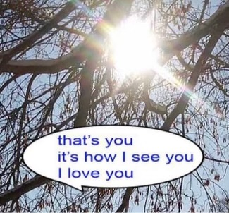
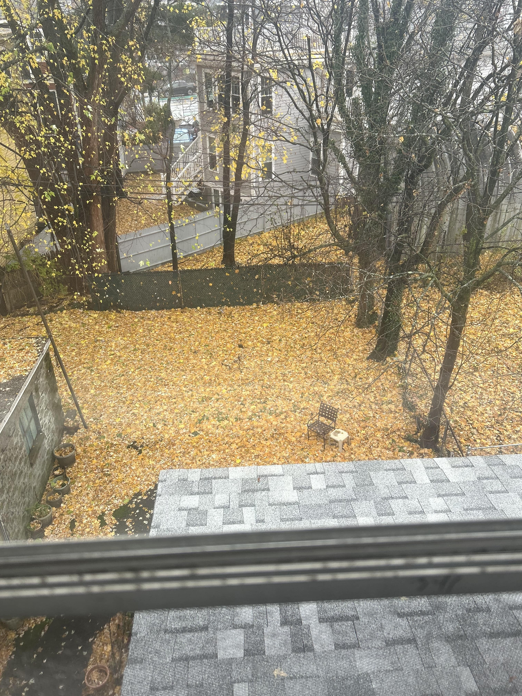

(4:30 pm) just finished a journal club. sitting outside. feeling tired dehydrated sick ill and also ill. i wanted a large sandwich so bad so im going to miss out on my new tradition of eating lambchops on the floor... instead im going to make chocolat pot de creme in my new pumpkin cocottes. (3 hours later) im so off i got half and half instead of cream but its fine. i didnt strain the custard because i dont have anything possible of straining anything. i dont own a dish deep enough to pour water half way up my cocottes so theyre overbaked. but its fine. i have to wait 4 hours now for them to cool which is also fine... im wearing my apron and drinking water out of a green mountain valley spring water bottle this is more than fine this is so so so good. its the only way ill drink water at home from now. new traditions. i must have so many traditions and patterns so that everytime i break one i have another to fall back on. over and over and over always turning one way and looking back.
(4:01 pm) i broke my perfume again. the exact same perfume i broke last time in more or less the exact same way. but this time i have an excuse, a more appreciable excuse. last time i was distracted by jokes and joy. this time it was by tragedy. i wont buy more perfume until a different perfume i want to get is back in stock. i wont buy more perfume until my life is no longer dominated by tragedy. i hope i can buy perfume soon... i want to smell so lovely i want to smell of roses and dirt and leave fresh and dry and damp. ive felt this way for a long time, but this repetition and new tradition of shattering perfume at inopportune times has made me very upset and very broke. im sitting in a meeting thinking of eating dinner of drinking a margarita and of cleaning my home and my sheets and my clothes and being so warm and so clean. ive decided that any time i begin to bite my nails due to boredome or anticipation to get up and leave. i decided this right now as i sit in a meeting i dont actually have to be at and type this blog update that skips over so many details that i dont want to talk about. i wonder if i have vegetables at home that i can cook. i wonder what ill cook with spenser when i see him in boston. something has happened over the past year to two years where i just talk and feel intense emotions mainly about loss and how awkward all of my old interactions were and so much regret about not putting so much attention into all of the things ive ever done.
(5:01 pm) its time to be festive. its time to be so excited and so thoroughly satisfied. im at spensers in boston and his backyard has a chair that's perfectly situated among multiple trees worth of yellow and only yellow leaves. its cold and its wet here. the leaves wont crisp for atleast a month i think, atleast not until the winter officially begins. itll be cold and wet for a while and the leaves will keep falling and maybe some of the yellow ones in the backyard will be covered by another (thinner) layer of orange and red and brown leaves. the radiators are turning on and soon ill have to keep mine on. i havent turned mine on yet as a stark refusal of excessive warmth until i am satisfied that the cold weather is here. its the festive spirit. i wrap myself in the two blankets i own and push myself into the corner of my room. both are linen, my sheets are linen, my pillow cases are linen. my walls are white the window is so far and my own warmth is still so much. 